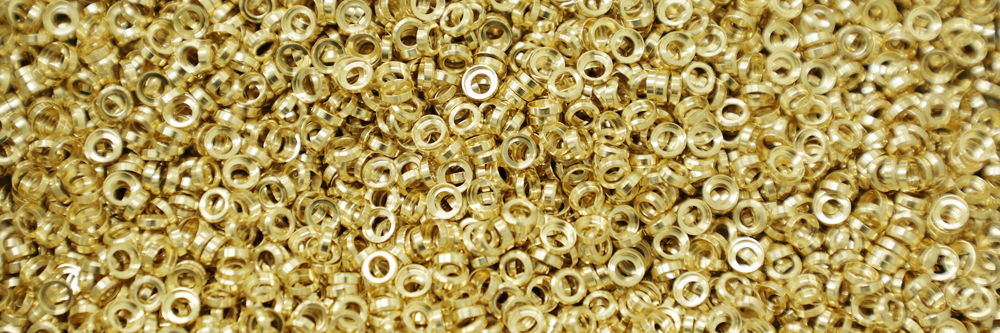
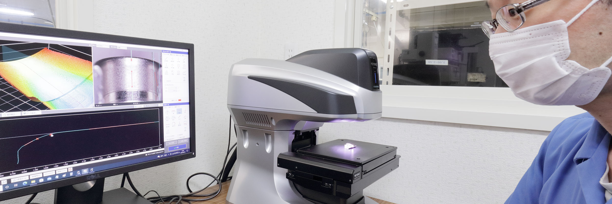

PRECISION TURNING SINCE 1961
ミリの部品を、
ミクロンで。
私たち東洋精工は、小さな部品を造る工場です。 コンピューター制御の最新鋭機を使い、ミリサイズの製品を ミクロン単位の誤差で、24時間、生真面目に製品を造り続けています。 その小さな部品が、自動車を走らせたり、コンピューターを動かしたり、 世界に情報を伝えたりしています。1961年創業、従業員60名。
最も厳しい加工公差は流量制御バルブ用ニードルの 「テーパー部円周振れ2μ以下」です。 対して測定側は、超精密測長機の繰り返し精度が0.03μm以下。 測る道具が作る精度より2桁細かいことが、 「保証できる」ということの中身です。
1961年
創業（昭和36年4月）
2026年に65周年
2μ以下
テーパー部円周振れ
（流量制御バルブ用ニードル）
60名
従業員数
（正社員56名・パート4名）
1000クラス
精密測定室
（クリーンルーム 2部屋）
TOLERANCES
公差で、話す。
現行サイトの製品一覧には、 18点の部品それぞれについて加工内容・公差・材質が記載されています。 ここでは公差が明記されているものを抜き出しました。
「まんまる旋削」と「under μ」は、いずれも登録商標です （登録商標第6742773号／第6742774号）。
PRODUCTS
作っているもの
現行サイトの製品一覧18点から、加工内容とともに抜粋しました。

このほか、ヒンジ部品、圧力解除用バネ受け部品などがあります。 現行サイトには全18点が掲載されています。
QUALITY
測れなければ、
保証もできない。
| 機器 | メーカー | 数量 | 備考 |
|---|---|---|---|
| 輪郭形状測定機 | 東京精密 | 1台 | SURFCOM |
| 真円度測定機 | 東京精密 | 2台 | RONDCOM |
| 工具顕微鏡（測定顕微鏡） | ニコン | 3台 | 演算機能付2台 |
| 3D形状測定機 | キーエンス | 1台 | VR-5000 |
| 超精密測長機 | — | — | 繰り返し精度 0.03μm以下 |
| マイクロスコープ | キーエンス | 1台 | 2000倍 |
| 画像測定器 | キーエンス | 3台 | 測長・形状・面粗度測定用 |
| ピンゲージ | アイゼン | 1000本 | 0.01mm毎 |
| 精密測定室 | 三基計装 | 2部屋 | クリーンルーム クラス1000 |

このほかマイクロメーター、ボアテスト、インジケータ、ハイトゲージ、 同軸測定器、双眼実体顕微鏡、レーザーマイクロ、エアーマイクロなどがあります。
素材まで遡る追跡
ご安心をお届けする製品の素材まで遡る完全な追跡システムを 持っています。
全員が訓練された正社員
全員が訓練された正社員による保証体制です。 従業員60名のうち56名が正社員です。
万一の場合の即応
万一の場合、お客様の立場を最優先にする即応手順を 定めています。
VALUE ANALYSIS
作れる形に、変える。
設計のデザインは決まっているが、どう作ればいいか悩んでいる。
試作品はできたけれど、難しすぎて量産できそうもない。
サンプルを持ち込んだが、価格が折り合わない。
完成品の歩留まりが悪く、採算が取れない。
こうした場面に、開発初期のイメージ段階から量産まで関わります。
文房具
切削性のよい材質への変更、機能を満たした上での形状の簡素化など 基本設計段階での仕様変更提案により、 大量生産に耐える部材になり商品化に成功。 基本2モデル、商品構成10種以上に採用されています。
通信機
構想段階での提案により、要求された形状を既存の加工方法で達成し、 目標コストで量産できる製品として商品化に成功。 基本5モデル、商品構成8種類にまで発展しています。
光通信部品
現流品の品位向上要求（面粗度改善）に対し加工方法の改善策を提案し、 要求をクリア。しかも同一コストで供給を可能とした。
制御機器
部品を採用いただいたお客様で 完成品組み立て歩留まり率の大幅な改善を達成され、 品質安定度をご評価いただいています。 類似部品のほぼ全量を採用いただいています。
COMPANY
会社概要
- 商号
- 株式会社 東洋精工
- 代表者
- 代表取締役社長 荻野 健寿
2026年4月1日付で新社長が就任し、前社長は会長に就任（お知らせより） - 資本金
- 10,000,000円
- 従業員数
- 60名（正社員56名・パート4名）
- 所在地（工場）
- 〒369-1411 埼玉県秩父郡皆野町大字三沢字諏訪平522
TEL 0494-65-0380／FAX 0494-65-0381 - 工場建物
- 工場面積 2,000m²／敷地面積 5,000m²
- 取引銀行
- 埼玉りそな銀行 秩父支店／日本政策金融公庫 さいたま支店／ 商工組合中央金庫 熊谷支店／武蔵野銀行 秩父支店／ 足利銀行 秩父支店／埼玉縣信用金庫 秩父支店／埼玉信用組合 皆野支店
各種指定・認定
- 埼玉県知事指定『彩の国工場』 2003年9月
- ISO 9001：2015 2017年2月
- ISO 14001：2015 2017年2月
- 埼玉県シニア活躍推進宣言企業認定 2019年10月
- 埼玉県多様な働き方実践企業 プラチナ認定 2019年12月（更新 2025年12月）
- 埼玉県シニア活躍推進宣言プラス企業認定 2022年4月
- 埼玉県SDGsパートナー登録 2022年11月
美しい部品造りで 幸せづくり
経営理念。「お客様にご満足いただけるよりよい製品を提供することで、 地域の発展や社員の幸福を願っています。」
図面の、いちばん厳しい寸法を。
真円度、内径公差、面粗度、直角度。 難しいところが決まれば、作り方が決まります。 設計段階からのご相談も承ります。
〒369-1411 埼玉県秩父郡皆野町大字三沢字諏訪平522
FAX 0494-65-0381